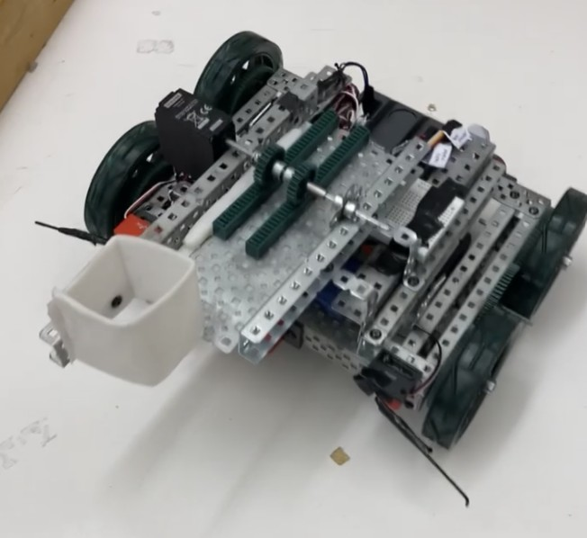

Designed and assembled a mechatronic autonomous robotic prototype intended to simulate an underwater camera cleaning robot.

- Designed chassis and drive train to achieve simple yet effective system movement.
- Integrated sensors and C-based programming to facilitate autonomous movement.
- Optimized design to achieve 100% on final performance evaluations.
Role
Mechanical Design Engineer
Location
Victoria
Tools
SolidWorks, VEX Robot Kit, ROBOT C, Microsoft Office